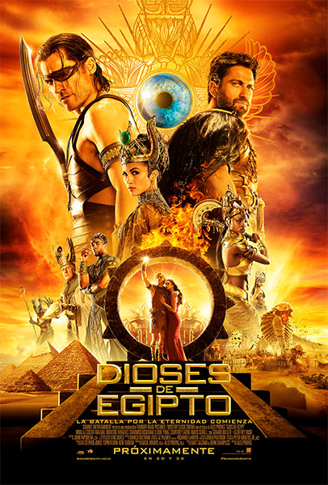

Star Wars: Los últimos Jedi Rey mejora sus recién descubiertas habilidades con la guía de Luke Skywalker, quien está un poco intranquilo por la fuerza de sus poderes. Mientras tanto, la Resistencia se prepara para la batalla contra la Primera Orden. Ver
Kong: La Isla Calavera Un grupo de científicos, soldados y aventureros exploran una isla desconocida en el Pacífico. Alejados de todo lo familiar, se aventuran en los dominios del poderoso Kong, y su misión de investigación se convierte en una de sobrevivencia en este Edén primitivo. Ver
Corazón de Dragón: La batalla por el fuego del corazón Un dragón conocido como Drago busca acabar con la rivalidad entre hermano y hermana, ambos con poderes de dragón, que están tras el trono de su abuelo, mientras surge una nueva amenaza. Ver
La Bella y la Bestia Un joven príncipe, encerrado en la forma de una bestia, sólo puede ser liberado con amor verdadero. Lo que puede ser su única oportunidad se presenta con Bella, una joven que llega a su castillo encantado. Ver
 Dioses de Egipto El héroe mortal Bek hace equipo con el dios Horus en una alianza en contra de Set, el despiadado dios de la oscuridad que ha usurpado el trono de Egipto, hundiendo en el caos y el conflicto al que fuera alguna vez un imperio próspero y pacífico. Ver
Zapatero a tus zapatos Max repara zapatos en la misma zapatería que su familia tiene desde hace generaciones. Desencantado con la rutina diaria, Max se topa con una reliquia familiar que le permite ponerse en los zapatos, y las vidas, de sus clientes, permitiéndole ver el mundo de otra manera. A veces ponerse en los zapatos de otra persona es la mejor manera de descubrirse a sí mismo. Ver